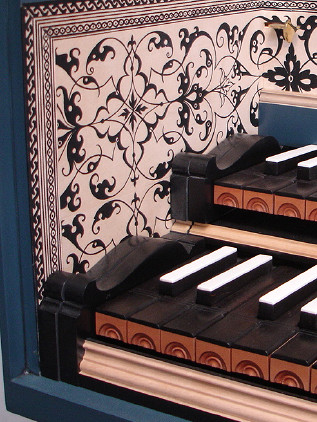

{kind=link}

About transposing keyboards…
Most of today’s harpsichords were designed to be tuned at baroque pitch (A415), but are equipped with keyboards which easily transpose a semitone up to modern pitch (A440), or even down to French baroque pitch (A392).
If your harpsichord has this transposition facility, it is often obvious by a split keyend block at either or both ends of the keyboard. The instrument specification will usually mention whether or not it is transposing. For example, “Two 56+1-note bone keyboards GG–d''' A392/A415/A440” means that the 56-note keyboards transpose up and down, and there is an extra course of strings and jacks so the top d''' is not lost at the A440 position. If unsure, ask the maker of your instrument, or your tuner/technician.
Transposition from A415 to A440 involves simply sliding the keyboards 12mm to the right, causing each key to play the jacks belonging to the next highest pitch. Where your instrument has this facility, it is imperative to use it to play at A440 instead of trying to pull up all the strings so much in pitch. (The rise in pitch of a semitone results in a tension increase of 12.5%.) Transposing the keyboards reduces the risk of string breakage or case structural problems.
There are two alternate methods of transposition, Safe or Quick, described on the following pages. Choose according to your confidence, and whether or not the quick method suits your instrument.
Note that in a transposed position, regulation may not always be quite as precise. This can depend on how accurately the maker set up your instrument originally. Some instruments may also have only enough strings and action for the actual range of the keyboard. In this case, you’ll usually lose the top note in the A440 position, and certainly you’ll lose the bottom note if you transpose down to A392. If you tuned your harpsichord in any temperament other than equal, your good keys will have inadvertently been transposed along with the pitch, so you may want to retune anyway to restore your key color.
Many instruments have their tuning pins arranged in a chromatic layout on the wrestplank at A415 pitch, reflecting the position of the accidental keys in groups of twos and threes throughout the compass. Some instruments don’t, but have the tunings pins for each choir in a straight line instead. No matter what sort of tuning pin layout you have, remember that after transposition to A440, the strings affected by the C tuning pins in the A415 position will now be played by the B keys.